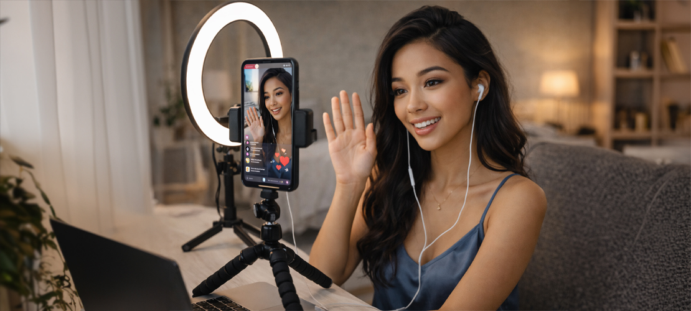

📲 Доступность
Не нужна дорогая камера, мощный компьютер или отдельное помещение. Начать можно практически сразу.
🚶♀️ Портативность
Смартфон позволяет вам работать в вебкам в любом месте, где есть доступ к интернету. Это позволяет менять фон
и обстановку, что интересно зрителям.
🤍 Близость
Качество картинки со смартфона часто воспринимается как более личное, «домашнее» и настоящее, что
может усилить эмоциональную связь с аудиторией.
⚠️ Ограничения
На многих стриминговых сайтах мобильные приложения или мобильная версия сайта урезаны по сравнению с
ПК версией, например, меньше возможностей для работы с чатом, настройками приватного шоу и т.д.
👆 Управление через сенсорный экран
Работая на смартфоне, вы будете использовать сенсорный экран, что может быть как преимуществом, так и
недостатком в зависимости от вашего опыта.
🌐 Стабильность соединения
Убедитесь, что у вас стабильное интернет-соединение, чтобы избежать прерываний во время трансляции.
📈 Тактики для успешной работы
- Чтобы обеспечить стабильное изображение, используйте штатив или держатель для смартфона. Это
поможет избежать дрожания камеры и улучшит качество видео на трансляции.
- Хорошее освещение имеет ключевое значение для создания качественного контента. Используйте
естественное освещение или портативные светильники для улучшения изображения.
- Подготовьте идеи для своих трансляций заранее. Это может быть темы, сценарии или образы, которые
вы хотите использовать.
- Используйте функции чата, чтобы активно общаться с зрителями. Задавайте вопросы, реагируйте на
комментарии и поддерживайте диалог.
- Если ваш смартфон не обеспечивает хорошего качества звука, рассмотрите возможность использования
внешнего микрофона для улучшения аудио.
- Убедитесь, что ваше рабочее пространство организовано и привлекательно. Уберите лишние предметы и
используйте фон, который не отвлекает внимание.
- Работая на смартфоне, следите за уровнем заряда батареи. Возможно, стоит иметь под рукой
портативную зарядку для длительных трансляций.
- Убедитесь, что вы выглядите привлекательно на камеру. Это включает в себя макияж, одежду и общий
стиль.
- После трансляции анализируйте свою работу, чтобы понять, что сработало, а что нет, и вносите
изменения в свои будущие стримы.
- Изучите, какие сайты наиболее дружелюбны к мобильным пользователям. Многие крупные площадки,
например, Chaturbate, StripChat, BongaCams, имеют собственные мобильные приложения или хорошо
адаптированные мобильные версии сайтов.
📌 Заключение
Следуя этим рекомендациям, вы сможете эффективно работать в вебкам-индустрии с помощью смартфона и
привлекать больше зрителей.